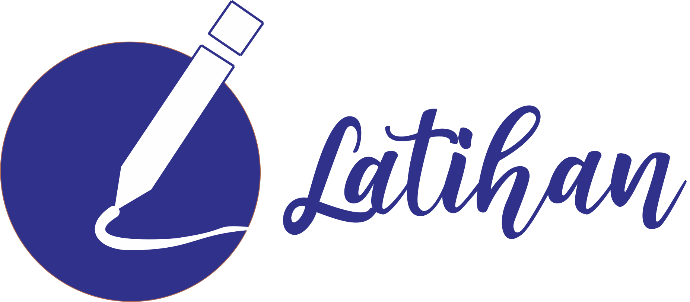

Oleh karena dari kedua ion garam tersebut masing-masing menghasilkan ion H+ dan ion OH-, maka sifat larutan garam ini ditentukan oleh nilai tetapan kesetimbangan asam (Ka) dan nilai tetapan kesetimbangan basa (Kb) dari kedua reaksi tersebut.
Reaksi: NH4F(aq) → NH4+(aq) + F–(aq) kation maupun anion, sama-sama mengalami hidrolisis, sebab keduanya berasal dari spesi lemah. Reaksi yang terjadi adalah sebagai berikut : NH4+(aq) + H2O(l) <——> NH4OH(aq) + H+(aq) F–(aq) + H2O(l) <——> HF(aq) + OH–(aq) Ternyata, hidrolisis kedua ion tersebut menghasilkan ion H+ maupun ion OH–. Dengan demikian, larutan garam tersebut mengalami hidrolisis total (sempurna).